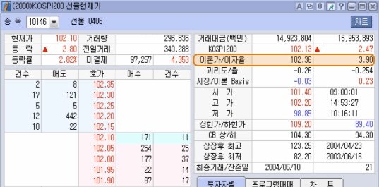

선물옵션 심화과정
실제 선물가격은 시장수급에 의하여 시장참여자의 예측이 반영되어 결정되고, 선물이론가격은 KOSPI 200 지수+이자비용-배당수입으로 결정된다는 것을 앞서 살펴보았습니다.
따라서, 실제 선물가격과 선물이론가격사이에는 차이가 발생될 수 있습니다.
이러한 차이를 괴리도라고 하고, 비율로 산출한 것을 괴리율이라고 합니다.
괴리도 = 실제 선물가격 - 선물 이론가격
괴리율 = (실제 선물가격/선물이론가격 - 1)
- 베이시스의 활용
베이시스는 만기가 되면 0이 되어 실제 선물가격 = KOSPI 200지수 = 선물이론가격이 됩니다. 따라서, 베이시스가 (+)라면 실제선물가격 > KOSPI 200지수이고, 만기에 실제선물가격 = KOSPI 200 지수가 되어야 하므로 선물은 고평가되어 있고, KOSPI 200지수는 저평가되어있다고 볼 수 있죠.
그래서 고평가된 선물을 팔고, 저평가된 KOSPI 200지수에 해당하는 Basket을 구성하여 매수하는 매수차익거래가 유입되죠. 반대로 베이시스가 (-)라면 실제선물가격 < KOSPI 200지수이고, 만기에 실제선물가격 = KOSPI 200 지수가 되어야 하므로 선물은 저평가되어 있고, KOSPI 200지수는 고평가 되어있다고 볼 수 있죠.
그래서 저평가된 선물을 사고, 고평가된 KOSPI 200지수에 해당하는 Basket을 구성하여 매도하는 매도차익거래가 유입되죠.
- 괴리율의 활용
괴리율도 베이시스와 동일하게 실제 선물가격의 고평가, 저평가여부를 판단하여 매수/매도차익거래가 유발되게하는 지표로 활용됩니다.
goodi 2004의 2000번 화면에서 베이시스와 괴리도/괴리율이 얼마인지 알 수 있습니다.

베이시스와 괴리율을 산출하기 위한 기본지표인 KOSPI200지수, 실제선물가격, 선물이론가격을 살펴보도록 하죠. KOSPI200지수는 220.80, 선물 이론가격은 221.75입니다.
베이시스 = 실제선물가격 - KOSPI200지수, 221.50 - 221.80 = -0.03
이론베이시스 = 선물이론가격 - KOSPI200지수, 221.75 - 221.80 = -0.05
괴리도 = 실제선물가격 - 선물이론가격, 221.50 - 221.75 = -0.25
괴리율 = (실제선물가격/선물이론가격-1)*100, (221.50/221.75 - 1)*100 = -0.113